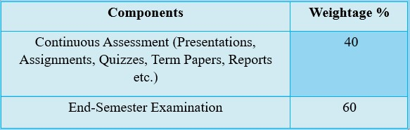
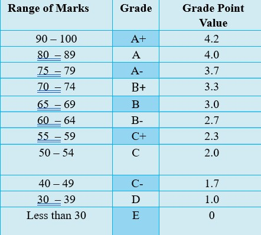

The performance of each student in each subject module taught during each semester will be evaluated by means of continuous assessment and an end-semester examination.
Lecturers should assign marks as given below for the continuous assessment component and the end-semester examination component and should announce this weightage at the commencement of the lecture series.
The subject lecturers should evaluate the candidates in respect of continuous assessment. The end-semester examination question papers set by the subject lecturer shall be moderated.
The performance of candidates at the end of each semester is evaluated as per the table below.
The Grade Point Average (GPA) of each candidate is calculated using the formula:
GPA = Σ(cigi) / Σci
where ci is the number of credits and gi is the grade point value obtained for the i-th subject module.
The minimum pass mark for each subject module is 50% (Grade C). The marks for the entire subject module are the weighted sum of the marks obtained for the two components. The grade point is determined as per the schedule given in the document.
It is compulsory that a candidate participates in both the continuous assessment component and the end-semester examination.
A candidate with the following marks is deemed to have failed the particular subject module: